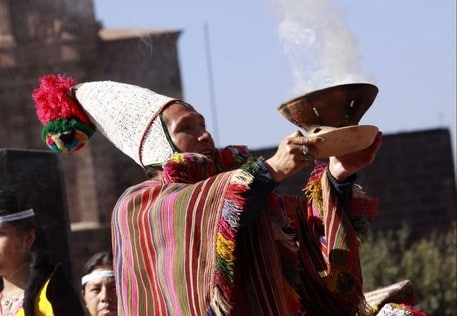

Org. Religiosa
La religión de los quechuas era politeísta, creían en un dios supremo que era VIRACOCHA y divinizaron la naturaleza como ser: el Inti (sol), Quilla (Luna), Chucuilla o Illapa (Rayo), Chasca (Estrella).
El culto importante y muy antiguo era el que se rendía a la madre tierra diosa de la pachamama (abundancia).
Generalmente ofrecían sacrificios de animales como llamas y otros. En algunos casos sacrificaban a las ñustas y a niños menores de diez años de edad. Los encargados de los sacrificios eran los sumos sacerdotes o VILLAC- UMA, al año celebraban cuatro fiestas para el culto de los dioses.